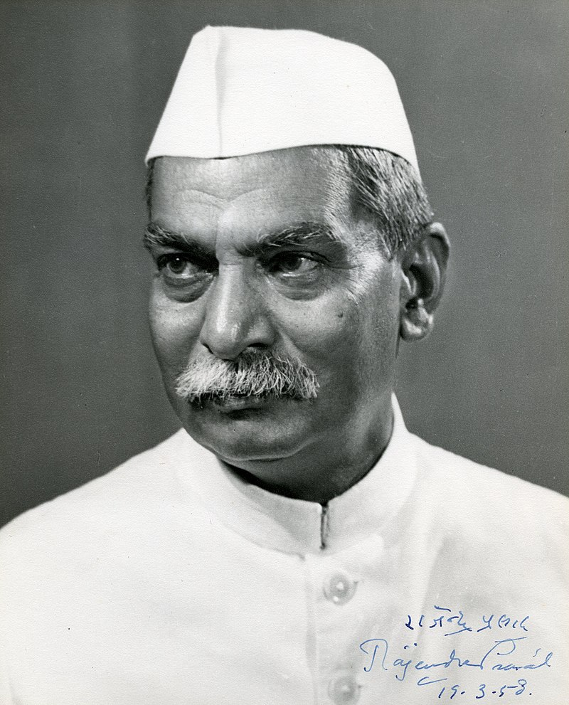

Jai Jawan. Jai Kisan was the slogan given by Dr. Rajendra Prasad during the freedom struggle in India

Biography
Rajendra Prasad (3 December 1884 – 28 February 1963) was an Indian politician, lawyer, Indian independence activist, journalist & scholar who served as the first
president of Republic of India from 1950 to 1962.[1] He joined the Indian National Congress during the Indian Independence Movement and became a major leader from
the region of Bihar and Maharashtra. A supporter of Mahatma Gandhi, Prasad was imprisoned by British authorities during the Salt Satyagraha of 1931 and the Quit
India movement of 1942. After the constituent assembly 1946 elections, Prasad served as Minister of Food and Agriculture in the central government. Upon
independence in 1947, Prasad was elected as President of the Constituent Assembly of India, which prepared the Constitution of India and served as its provisional Parliament.
When India became a republic in 1950, Prasad was elected its first president by the Constituent Assembly. As president, Prasad established a tradition for non -
partisanship and independence for the office-bearer and retired from Congress party politics. Although a ceremonial head of state, Prasad encouraged the development
of education in India and advised the Nehru government on several occasions. In 1957, Prasad was re-elected to the presidency, becoming the only president to serve two
full terms.[2] Prasad stayed in office for the longest term of around 12 years. Post the completion of his tenure, he quit the Congress and set up new guidelines for
parliamentarians which are still followed